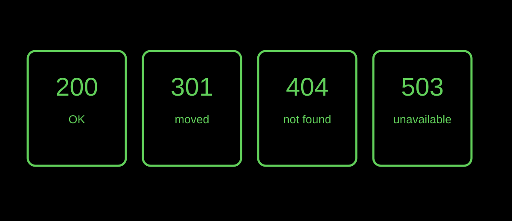

HTTP basics
HTTP Status Codes Explained: 200, 301, 404, and 503
An HTTP response code is a compact signal from a server. It helps a browser or crawler understand whether a requested page succeeded, moved, disappeared, or is temporarily unavailable.
Published · By the bug breeder

The short answer
200 means the request succeeded. 301 communicates a permanent move. 404 means the resource was not found. 503 signals that the service is currently unavailable. The right code tells the truth about the URL's present state.
Why an honest response matters
When a removed page has no suitable replacement, a real 404 or 410 is clearer than a success response containing an error message. Google calls a success response that looks like a missing page a “soft 404” and advises returning a meaningful status code instead.
If a page has permanently moved to a clear replacement, a 301 can direct visitors and crawlers to that new location. Do not redirect unrelated missing pages merely to avoid showing an error.
The Insectary view
A status code is one of the small marks a request leaves behind. It describes the server's response, not the whole story of a visitor or a page's value. A green 200 is not proof that content is useful; a 404 is not proof that it was never there.
Limits
HTTP codes have detailed semantics and server configurations can add complexity. Check actual responses in a browser's network panel or with a server tool before diagnosing an indexing issue.